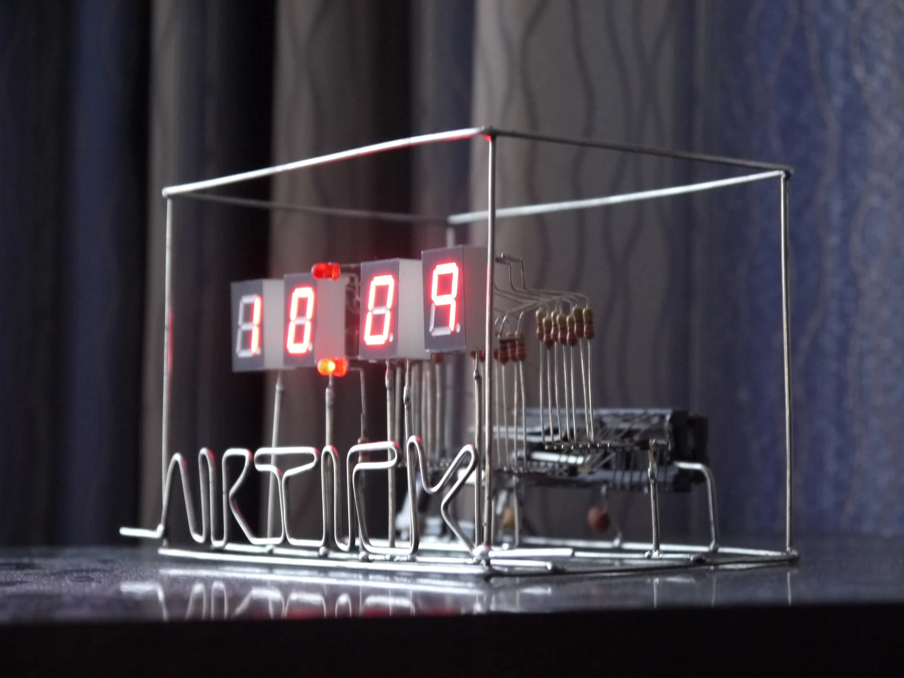

AIRTICK
A digital clock with no circuit board and no insulated wire. Every connection is bare copper soldered in mid-air — so the wiring is simultaneously the circuit, the chassis, and the lettering.

The idea
Nearly every electronic product is built on a circuit board, and nearly every circuit board is hidden inside a case. There are real reasons for that — but one of the main ones is simply that a PCB is not much to look at. The result is that most people have never actually seen the thing that makes their devices work.
AIRTICK inverts it. There is no board to hide, because there is no board. The circuit is soldered together freeform from bare copper wire, with nothing insulated and nothing covered, and it is the finished object rather than the thing inside the finished object.
The wire does three jobs
What makes freeform construction interesting is not that the components float — it is that one material carries every function at once:
- Conductor. Every net is a bent length of bare copper. No insulation anywhere, which means every spacing is a design decision rather than something a solder mask handles for you.
- Structure. The same wire holds each component in position and forms the open cube the whole thing stands in. Stiffness comes from geometry, not from a substrate.
- Typography. The word AIRTICK along the base is bent from the same stock, and is part of the circuit's physical frame.
There is no layer to hide a mistake in, and no undo. A wrong bend is a rebuild.
Electronics
An AT89S51 — the classic 8051 that every Taiwanese electronics student meets first, chosen deliberately so that anyone with basic electronics training could read the circuit and take the idea further. Four multiplexed seven-segment digits, set buttons for hours and minutes, AM/PM indicators, and an alarm on a piezo.
The firmware is BASCOM-8051 BASIC. Timer 0 runs the timebase on interrupt and the main loop carries the cascade — hundredths into seconds into minutes into hours — while digits are refreshed from a segment-pattern lookup table. The table in the source is commented with an ASCII diagram of a seven-segment digit, because working out which bit is which segment at two in the morning is not something you want to do twice:
' 7 Segment Pattern Data Const Segpat0 = &B11000000 ' 0 ****A*** Const Segpat1 = &B11111100 ' 1 * * Const Segpat2 = &B10010010 ' 2 F B Const Segpat3 = &B10110000 ' 3 * * Const Segpat4 = &B10101100 ' 4 ****G*** Const Segpat5 = &B10100001 ' 5 * * Const Segpat6 = &B10000001 ' 6 E C Const Segpat7 = &B11101000 ' 7 * * Const Segpat8 = &B10000000 ' 8 ****D*** Const Segpat9 = &B10101000 ' 9 Const Segpblk = &B11111111 ' 10 BLANK '--------------------------------------------------------------- Hour10 Alias P2.0 Led_am Alias P2.1 Led_pm Alias P2.2 Piezo Alias P2.3
The source went through four revisions on the way to the competition; the version linked above is the last one.
Why it was worth doing
- It is legible. You can trace the entire circuit by eye, component to component, without a schematic. For anyone learning electronics that is worth more than a tidier build.
- No etching. Making a PCB means ferric chloride or similar, and small workshops rarely dispose of it properly. Freeform construction skips that entirely.
- No enclosure. Nothing moulded, nothing to throw away, nothing between you and the circuit.
- The form is free. The same circuit can be bent into any shape, which is why it was also entered under the name Shape-Shifting Electronic Clock. The electrical design constrains the topology, not the silhouette.